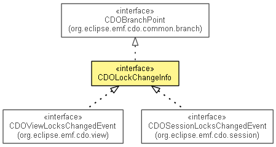

org.eclipse.emf.cdo.common.lock
Interface CDOLockChangeInfo
- All Superinterfaces:
- CDOBranchPoint, CDOTimeProvider
- All Known Subinterfaces:
- CDOSessionLocksChangedEvent, CDOViewLocksChangedEvent
- public interface CDOLockChangeInfo
- extends CDOBranchPoint

Represents a change in the lock state of a set of objects. Instances are meant to be sent from the server to the
client for the purpose of notifying the latter.
- Since:
- 4.1
- No Implement
- This interface is not intended to be implemented by clients.
- No Extend
- This interface is not intended to be extended by clients.
isInvalidateAll
boolean isInvalidateAll()
- Returns:
true if this instance signals that all lockstates must be invalidated,
false otherwise
getBranch
CDOBranch getBranch()
- Description copied from interface:
CDOBranchPoint
- Returns the branch of this branch point, or
null if this branch point is the
base of the main branch.
- Specified by:
getBranch in interface CDOBranchPoint
- Returns:
- The branch at which the lock changes took place, same as
getView().getBranch().
getTimeStamp
long getTimeStamp()
- Description copied from interface:
CDOBranchPoint
- Returns the time stamp of this branch point, or the fixed special time stamp
unspecified if this branch point marks the head of a branch.
- Specified by:
getTimeStamp in interface CDOBranchPoint- Specified by:
getTimeStamp in interface CDOTimeProvider
- Returns:
- The repository time at which the lock changes took place. This is only an informal indication; no formal
relation (e.g. an ordering) with commit timestamps is guaranteed.
getLockOwner
CDOLockOwner getLockOwner()
- Returns:
- The view, represented as a
CDOLockOwner, that authored the lock changes.
getLockStates
CDOLockState[] getLockStates()
- Returns:
- The new lock states of the objects that were affected by the change
getOperation
CDOLockChangeInfo.Operation getOperation()
- Returns:
- the type of lock operation that caused the lock changes
getLockType
IRWLockManager.LockType getLockType()
- Returns:
- the type of locks that were affected by the lock operation
Copyright (c) 2011, 2012 Eike Stepper (Berlin, Germany) and others.